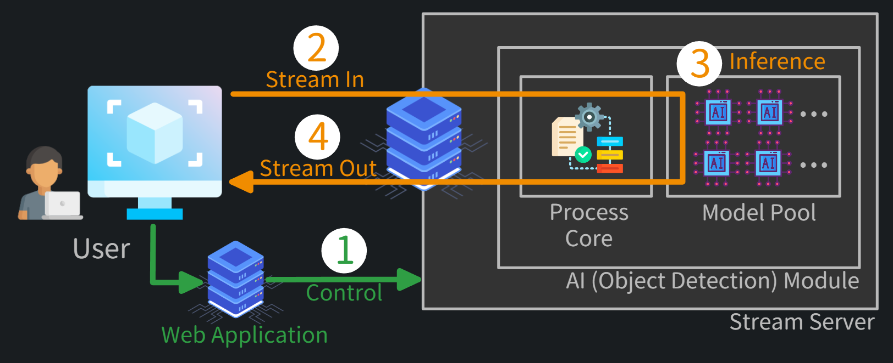
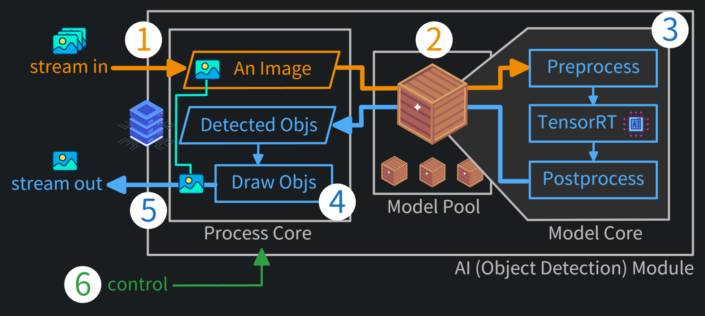
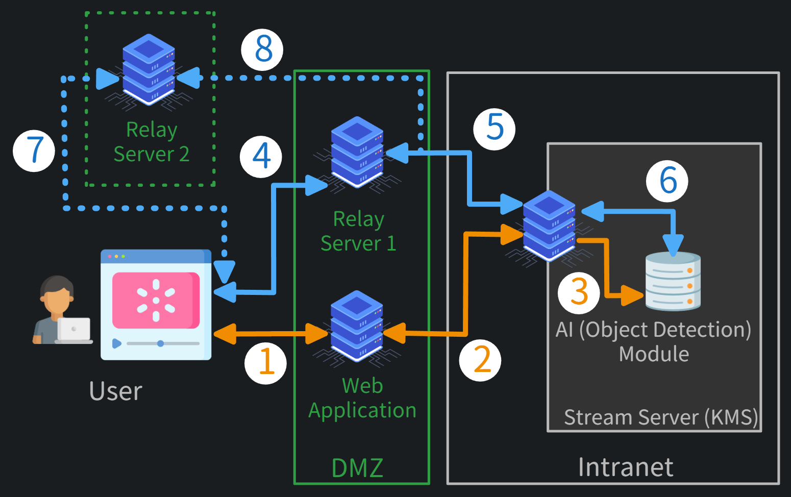
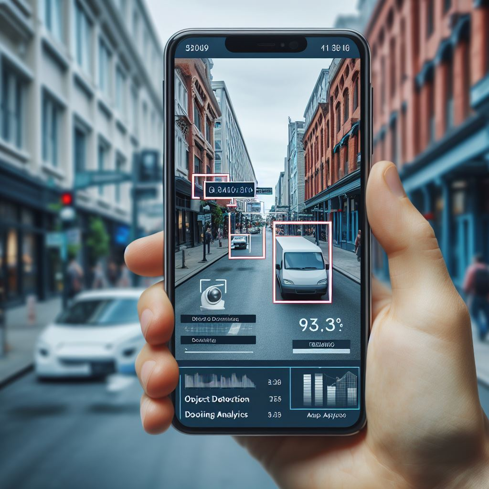

Live Demonstration
Car
AI Module
Overview
In the media stream server, every application or process can be considered as a module. The AI module, in this demo, is object detection. The following chart shows an overview of how the media stream flows in and out of the module.  Input streaming can be interpreted as a sequence of images arranged in a continuous stack. So the AI module processes one image at a time.- Control: after the user presses start button, the web appplication backend sets up streaming parameters and starts streaming
- Stream In: images are captured from user's webcam and sent to the stream server
- Inference: images flow from media server to AI module for object detection
- Stream Out: the defected object boxes are drawn on the images and sent back to the browser
AI Module Core
Let's take a closer look at the AI module. The following list shows how exactly the images are processed. - An image from the streaming flows into the model pool
- The image is assigned to a session-dedicated model wrapper in the model pool
-
The image is preproccessed, fed into the model, and the raw outputs are processed
- Preprocess: image resize, letterboxing, channel conversion
- TensorRT: infer using a TensorRT model
- Postprocess: object coordinates, confidence values conversion
- Draw detected object boxes on the input image
- The drawn image is sent back to the user
Streaming Architecture
The media steam server in this demo is deployed in the intranet, so an additional media relay server is
needed. The full name of the media stream server is
Kurento Media Server, abbreviated as
KMS, where the AI module is installed.
Network Architecture
The following chart is the network architecture and the list shows the procedure of how this demo application runs. - A user connects to the website and click start streaming
- Web application backend creates a session for the user
- Stream server initializes the AI module and obtains a TensorRT model
- The streaming flows from user's webcam to relay server
- The streaming flows to the stream server
-
The streaming flows to object detection module for processing
After processing, the streaming then flows from 6 to 5, from 5 to 4 and back to the user. - and 8. This path is an alternative path (alternative relay server) for 4. and 5.
Streaming Server
Streaming Server
The stream server,Kurento Media Server(KMS), is a open-source multimedia server package based on WebRtc. It is able to send/receive/process any streams from any directions. Common applications, such as video and audio conferencing, live streaming, etc.
Modules
Custom modules are available in the media server. If AI models are combined with it, it can create more applications such as object detection, face recognition, face validation, document analysis, text recognition, etc.
Download / Installation
The entire system can be divided into five parts. Most of them provide both pre-built binaries and source
code.
An alternative method involves assigning images to random model wrappers at a time for recognition, instead of continuously occupying a single model wrapper.
1. Kurento Streaming Server (KMS)
Currently (January 2024), the latest version is 7.0.1 and the official supported operating system isUbuntu 20.04 (Focal) (64-bits). They also provide other installation methods such as docker image. Here is the official guide. If your operating system is
Ubuntu 22.04 (64-bits), which is not officially supported, it may not work properly according to my test. You could build everything on your own or download pre-built one on my GitHub. Note that some older libraries have been used in the pre-built binaries to make it work properly on the newer operating system.
Warning
These outdated libraries might introduce potential security vulnerabilities or bugs.
2. AI Module
The module is designed to load a fixed number of models into VRAM when the stream server starts, and these models are wrapped in a model pool.When a user session is created, a model wrapper from the pool is assigned to the session for dedicated use. Note
Current approach ensures optimal performance and user experience. However, it could limit the maximum
number of concurrent users online.
An alternative method involves assigning images to random model wrappers at a time for recognition, instead of continuously occupying a single model wrapper.
3. Model
The object detection neural network used in this demo is YOLOv7. Only theYOLOv7-W6,
YOLOv7and
YOLOv7-tinymodels are showcased. Remember to convert the models to TensorRT format. Since the model is dedicated to GPU use, it is not provided. You will need to build it on your own machine. Some other necessary GPU-related libraries:
4. Web Application
There are two kinds of auto-generated client libraries produced during the module build process: Java and Javascript. In this demo, the Java client library is used, combined with Spring Boot as the backend framework.5. Relay Server Optional
Whether to use relay server depends on your network architecture. In this demo, since the stream server is behind the DMZ within the intranet, so a TURN server is deployed. The TURN server typically includes STUN server which in some cases will be used. If your operating system is Ubuntu, coturn can be installed via apt.apt update
apt intall coturnAbout / Credits
Our Team
People 1
Description a
Description b
People 2
Description a
Description b
Credits
- yolov7_trt
- YOLOv8-TensorRT
- Image Creator from Microsoft Designer
- Icons from Flaticon (click to show complete list)
- Info icons created by Anggara
- Exclamation mark icons created by Good Ware
- Motorcycle icons created by sonnycandra
- Info icons created by Anggara
- Exclamation mark icons created by Good Ware
- Motorcycle icons created by sonnycandra
- Error icons created by juicy_fish
- Play icons created by Freepik
- Cargo truck icons created by Chanut-is-Industries
- Bike icons created by Freepik
- Train icons created by Google
- Car icons created by fjstudio
- Car icons created by Freepik
- Bus icons created by Hight Quality Icons
- Person icons created by Ilham Fitrotul Hayat
- Plane icons created by Freepik
- Stop icons created by Sakipa
- Boat icons created by Freepik
- Traffic light icons created by Ayub Irawan
- Hydrant icons created by Freepik
- Street sign icons created by Wira Stocker
- Stop icons created by Freepik
- Meter icons created by Freepik
- Bench icons created by Pixel perfect
- Bird icons created by Freepik
- Black cat icons created by PLANBSTUDIO
- Dog icons created by Freepik
- Slow icons created by Freepik
- Sheep icons created by Freepik
- Cow icons created by Freepik
- Elephant icons created by Freepik
- Zoo icons created by Freepik
- Zebra icons created by Freepik
- Giraffe icons created by surang
- Backpack icons created by apien
- Umbrella icons created by Freepik
- Handbag icons created by Freepik
- Accessory icons created by VectorPortal
- Suitcase icons created by Job Moon
- Frisbee icons created by Smashicons
- Ski equipment icons created by Aranagraphics
- Snowboard icons created by Fliqqer
- Sport icons created by small.smiles
- Kite icons created by Stockio
- Baseball bat icons created by Icongeek26
- Baseball glove icons created by Freepik
- Skateboard icons created by Smashicons
- Surfboard icons created by bqlqn
- Tennis icons created by Freepik
- Bottle icons created by Pixel perfect
- Wine icons created by Mark1987
- Cup icons created by Freepik
- Fork icons created by Roundicons
- Knife icons created by Freepik
- Spoon icons created by Roundicons
- Rice icons created by Mayor Icons
- Food and restaurant icons created by Freepik
- Food and restaurant icons created by Smashicons
- Orange icons created by Smashicons
- Broccoli icons created by Vitaly Gorbachev
- Carrot icons created by Freepik
- Snack icons created by Mayor Icons
- Hot dog icons created by Freepik
- Pizza icons created by Freepik
- Donut icons created by Freepik
- Cake icons created by Nanda Bean
- Chair icons created by apien
- Couch icons created by Buandesign
- Flower pot icons created by Tanah Basah
- Bed icons created by Cursor Creative
- Table icons created by Freepik
- Furniture and household icons created by afif fudin
- Monitor icons created by Freepik
- Device icons created by Syahrul Hidayatullah
- Computer mouse icons created by Ifanicon
- Remote control icons created by Freepik
- Hardware icons created by Stockes Design
- Iphone icons created by Maxim Basinski Premium
- Microwave icons created by VectorPortal
- Oven icons created by Freepik
- Toaster icons created by VectorPortal
- Sink icons created by Smashicons
- Refrigerator icons created by Irfansusanto20
- Book icons created by Freepik
- Clock icons created by Freepik
- Vase icons created by kerismaker
- Scissors icons created by Freepik
- Teddy bear icons created by CapVora
- Hair dryer icons created by Freepik
- Toothbrush icons created by nawicon
- Object icons created by Uniconlabs
- User icons created by Freepik
- Server icons created by vectorsmarket15
- Database icons created by Freepik
- Desktop icons created by fjstudio
- Neural network icons created by Flat Icons
- Image icons created by Kiranshastry
- Crate icons created by smashingstocks
- Process icons created by Freepik